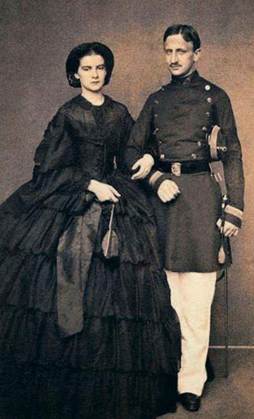
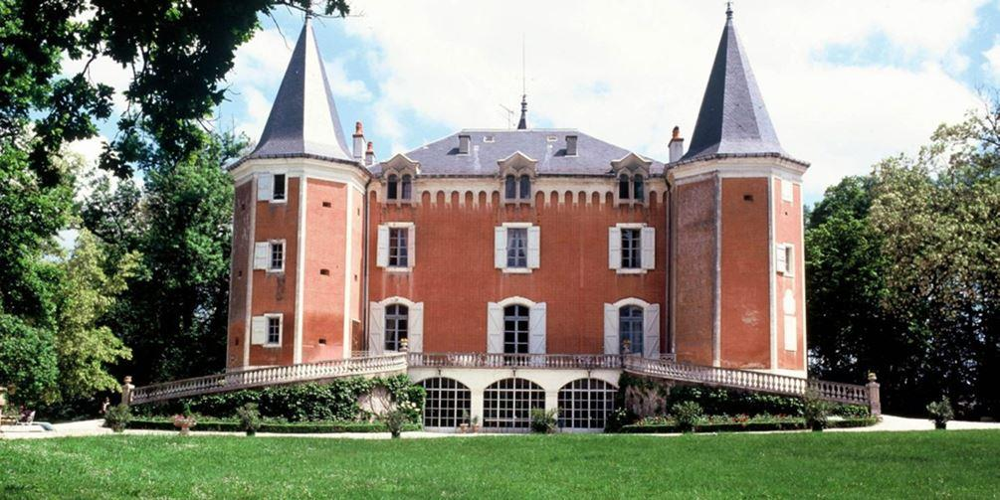

Cette chronique aborde ici deux domaines qui me tiennent à cœur, l’histoire et la psychologie, sous un angle inusuel, la reconstitution historique d’une époque, celle du Risorgimento et de l’unification italienne, autour de la vie tragique de l’héroïne du récit, et un roman en forme de roadtrip au bout de la nuit, deux sagas dont les auteurs et les personnages centraux sont des femmes.
L’extraordinaire sœur de Sissi
Marie Sophie Amélie en Bavière, née Wittelsbach, vit le jour le 5 octobre 1841 à Possenhofen, dans le district de Starnbeg, en Haute-Bavière. Elle est la sœur cadette de la célébrissime Sissi, qui devint l’impératrice Élisabeth d’Autriche et reine de Hongrie, de Bohême et de Lombardie-Vénétie, après qu’elle eut épousé, à l’âge de 16 ans, l’empereur François-Joseph Ier, le 24 avril 1854.
Le récit de Lorraine Kaltenbach est doublement biographique. Il raconte le destin tragique de celle que Proust, dans A la recherche du temps perdu, baptisa « la reine soldat » et qui fut « princesse par la naissance, reine par le mariage et héroïne de roman par le caractère », et en même temps il relate la quête de l’auteure en vue de retrouver la trace de la fille de son héroïne, une nièce cachée de Sissi.
A 97 ans, la grand-mère de l’auteure, « un petit chef d’œuvre de civilisation » baigné dans l’effluve de son parfum Calèche d’Hermès si prégnant qu’il l’annonçait avant même qu’on ne l’aperçoive, lui révéla l’existence de Daisy, fruit des amours entre la reine de Naples et un Français curieusement enrôlé dans les zouaves pontificaux au début des années 1860 alors qu’il était de souche huguenote, Emmanuel de Lavaÿsse, un cousin.
À son époque, Marie-Sophie en Bavière connut gloire et célébrité. Elle fut une égérie de Proust, d’Alexandre Dumas, d’Alphonse Daudet, de Gabriele d’Annunzio. Sa parenté avec Sissi et son mari, l’Empereur d’Autriche, et sa beauté en faisaient un parti convoité. En 1858, le roi Ferdinand II des Deux-Siciles, très affaibli par la maladie, demanda la main de la sœur cadette de l’impératrice pour son fils aîné, François, duc de Calabre, qui ne tardera pas à lui succéder.
Chassés de Naples par les Chemises rouges de Garibaldi, que soutenait le fourbe Victor-Emmanuel II (1820-1878), roi du Piémont-Sardaigne, duc de Savoie et comte de Nice, avant qu’il ne devienne avec l’unification italienne roi d’Italie du 17 mars 1861 jusqu’à sa mort, François II et Marie-Sophie se réfugièrent dans la citadelle maritime de Gaète, bientôt assiégée, impitoyablement bombardée par seize mille Piémontais commandés par un général cruel qui n’hésita pas à faire contaminer les puits d’eau en y jetant des charognes d’animaux. Des Italiens combattent des Italiens. d’Annunzio parlera de ce siège comme de celui de toutes les horreurs.
Marie-Sophie s’y conduisit de manière héroïque. À ceux qui lui conseillaient de se mettre à l’abri, elle rétorquait, songeant peut-être à son mari : « Puisque les hommes manquent de courage, il faut bien que les femmes en montrent un peu ». Quoi qu’il en fût, le couple royal des Deux-Siciles dut quitter son dernier bastion et se retirer auprès du pape dans ce qui restait des États pontificaux.
François, jeune homme insignifiant, apparemment plus intéressé par les ouvrages de piété et la vie des saints que par la vie tout court, ne parlant pas l’allemand alors que sa femme d’origine bavaroise ne parlait pas l’italien, lui souffrant d’un phimosis qui l’empêchait de consommer le mariage, fit que la jeune femme, qui n’a pas encore 20 ans, rapidement s’ennuiera.
Elle s’éprit d’un jeune zouave pontifical que l’on croira longtemps être un aristocrate belge, alors qu’il était français, Emmanuel de Lavaÿsse, dont Marie-Sophie tomba enceinte. Sa famille la cacha en Bavière et lui fit accoucher discrètement dans un couvent d’Augsbourg d’une petite fille.
Marie-Sophie a 21 ans quand, en pleine « question romaine », naît Daisy, laquelle vécut à Paris et effectua de longs séjours près de Revel, dans le château de Garrevaques, appartenant depuis le XVe siècle à la famille de la narratrice. C’est cette partie française de l’épopée de la « reine soldat » et de son enfant cachée qui constitue l’essentiel du récit instruit et captivant de Lorraine Kaltenbach.
Plus immortelle que moi
C’est à un tout autre type de saga qu’invite la romancière et scénariste Sophie Henrionnet dont ce roman à mi-chemin entre Thelma et Louise et Vol au-dessus d’un nid de coucou n’est pas le premier et un précédent paru aux Editions du Rocher, Sur les balcons du ciel, lui avait valu un commentaire amical et louangeur de Virginie Grimaldi (« Ce roman est un bijou. Ne passez pas à côté ! »).
Mathilde, le personnage central de Plus immortelle que moi, est du 4 mai, « pile entre les ponts ». « J’ai toujours eu la sensation de rendez-vous raté avec le monde », confie-t-elle, tout juste passé le cap des quarante ans, à sa psychiatre, car Simon, son mari, se moquerait de ce qu’il qualifierait de nombrilisme et pour son fils Ruben cela fait déjà un certain temps que sa mère appartient au monde fossile.
Son existence d’avant « Les Airelles », un « institut de repos », balançait de saison en saison entre le marron terne et le beige sans saveur. Elle ignore si sa vie d’avant pourra un jour reprendre son cours, ni si c’est souhaitable. Toujours la première arrivée à l’officine de pharmacie où elle est employée, la seule à se garer docilement sur les places dédiées au personnel, celle qui poussait le vice à emporter chez elle les sauvegardes du système informatique, elle n’est pourtant que pharmacienne assistante, pas même propriétaire des lieux, alors qu’elle est titulaire d’un doctorat.
Mathilde vous fait découvrir avec humour, émotion et lucidité au fil du journal que sa psychiatre lui a conseillé de tenir, les lignes de faille de son existence arrivée à ce cap critique de la quarantaine en plein burn-out, les détours insolites, au propre comme au figuré, de sa schizophrénie et les étonnants personnages qui la peuplent.
T.G.
RÉFÉRENCES BIBLIOGRAPHIQUES
1. Le secret de la reine soldat, L’extraordinaire soeur de Sissi, Lorraine Kaltenbach, Editions du Rocher, 304 pages.
2. Plus immortelle que moi, Sophie Henrionnet, Editions du Rocher, 204 pages.
Partager cette page